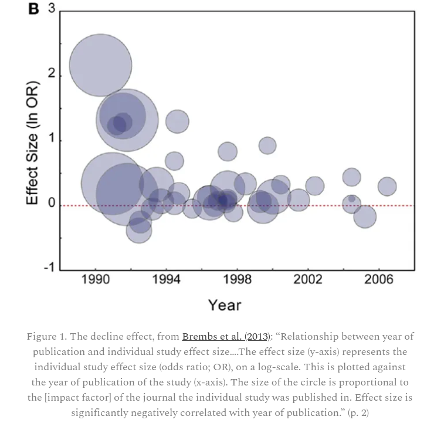
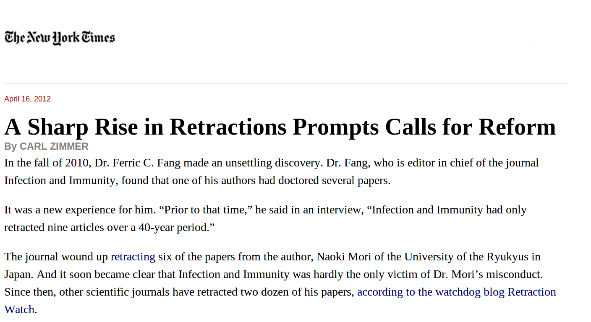
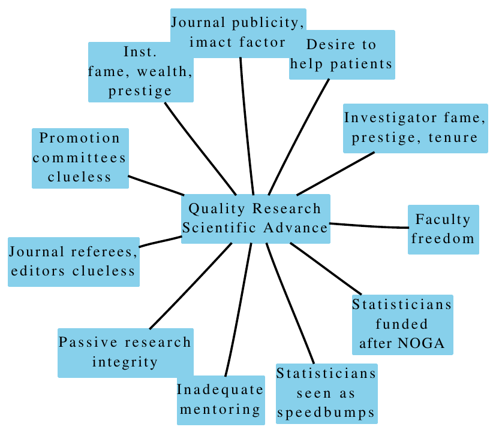
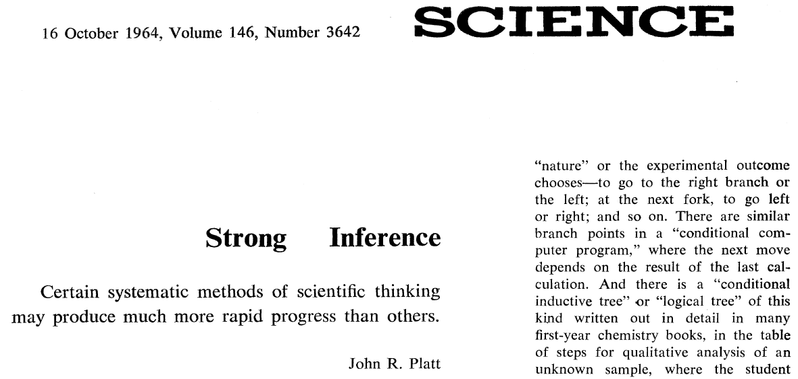

21 Reproducible Research
Disconfirmation bias: giving expected results a relatively free pass but rigorously checking non-intuitive results
— Nuzzo (2015)
An excellent article on how to do reproducible research is Munafò et al. (2017) for which the pdf file is openly available. The link to an excellent video by Garrett Grolemund is on the right.
This article by Gelman discussed the role that statistical “significance” plays in non-reproducible research.
21.1 Non-reproducible Research
- Misunderstanding statistics
- Investigator moving the target
- Lack of a blinded analytic plan
- Tweaking instrumentation / removing “outliers”
- Floating definitions of response variables
- Pre-statistician “normalization” of data and background subtraction
- Poorly studied high-dimensional feature selection
- Programming errors
- Lack of documentation
- Failing to script multiple-step procedures
- using spreadsheets and other interactive approaches for data manipulation
- Copying and pasting results into manuscripts
- Insufficient detail in scientific articles
- No audit trail
21.2 General Importance of Sound Methodology
21.2.1 Translation of Research Evidence from Animals to Humans
- Screened articles having preventive or therapeutic intervention in in vivo animal model, \(> 500\) citations (Hackam & Redelmeier (2006))
- 76 “positive” studies identified
- Median 14 years for potential translation
- 37 judged to have good methodological quality (flat over time)
- 28 of 76 replicated in human randomized trials; 34 remain untested
- \(\uparrow\) 10% methodology score \(\uparrow\) odds of replication \(\times\) 1.28 (0.95 CL 0.97-1.69)
- Dose-response demonstrations: \(\uparrow\) odds \(\times\) 3.3 (1.1-10.1)
Note: The article misinterpreted \(P\)-values
21.2.2 Other Problems
- Rhine and ESP: “the student’s extra-sensory perception ability has gone through a marked decline’’
- Floating definitions of \(X\) or \(Y\): association between physical symmetry and mating behavior; acupuncture
- Selective reporting and publication bias
- Journals seek confirming rather than conflicting data
- Damage caused by hypothesis tests and cutoffs
- Ioannidis: \(\frac{1}{3}\) of articles in Nature never get cited, let alone replicated
- Biologic and lab variability
- Unquestioning acceptance of research by the “famous”
- Weak coupling ratio exhibited by decaying neutrons fell by 10 SDs from 1969–2001
21.2.3 What’s Gone Wrong with Omics & Biomarkers?
- Gene expression-based prognostic signatures in lung cancer: Ready for clinical use? (Subramanian & Simon (2010))
- NSCLC gene expression studies 2002-2009, \(n \geq 50\)
- 16 studies found
- Scored on appropriateness of protocol, stat validation, medical utility
- Average quality score: 3.1 of 7 points
- No study showed prediction improvement over known risk factors; many failed to validate
- Most studies did not even consider factors in guidelines
- Completeness of resection only considered in 7
- Similar for tumor size
- Some only adjusted for age and sex
21.2.4 Failure of Replication in Preclinical Cancer Research
- Scientists at Amgen tried to confirm published findings related to a line of research, before launching development
- Identified 53 ‘landmark’ studies
- Scientific findings confirmed in only 6 studies
- Non-reproduced articles cited far more frequently than reproduced articles
Begley CG, Ellis LM: Raise standards for preclinical cancer research.
Nature 483:531-533; 2012
The Decline Effect
Moln Syed discusses this paper by Björn Brembs, Katherine Button and Marcus Munafò where they present the graph of the “design effect” found below.

The decreasing effect size over time is indicative of lax publishing standards for new findings, followed by more rigorous research finding less impressive effects.
Natural History of New Fields
Each new field has a rapid exponential growth of its literature over 5-8 years (“new field phase”), followed by an “established field” phase when growth rates are more modest, and then an “over-maturity” phase, where the rates of growth are similar to the growth of the scientific literature at large or even smaller. There is a parallel in the spread of an infectious epidemic that emerges rapidly and gets established when a large number of scientists (and articles) are infected with these concepts. Then momentum decreases, although many scientists remain infected and continue to work on this field. New omics infections continuously arise in the scientific community.
— Ionnidis (2010)

21.3 System Forces

21.4 Strong Inference
Cognitive biases are hitting the accelerator of science: the process spotting potentially important scientific relationships. Countering those biases comes down to strengthening the ‘brake’: the ability to slow down, be sceptical of findings and eliminate false positives and dead ends.
— Nuzzo (2015)

Platt (1964)
- Devise alternative hypotheses
- Devise an experiment with alternative possible outcomes each of which will exclude a hypothesis
- Carry out the experiment
- Repeat
- Regular, explicit use of alternative hypotheses & sharp exclusions \(\rightarrow\) rapid & powerful progress
- “Our conclusions … might be invalid if … (i) … (ii) … (iii) … We shall describe experiments which eliminate these alternatives.” (Platt (1964))
21.5 Pre-Specified Analytic Plans
I have enormous flexibility in how I analyze my data and what I choose to report. This creates a conflict of interest. The only way to avoid this is for me to tie my hands in advance. Precommitment to my analysis and reporting plan mitigates the influence of these cognitive biases.
— Brian Nosek, Center for Open Science (Nuzzo (2015))
- Long the norm in multi-center RCTs
- Needs to be so in all fields of research using data to draw inferences Rubin (2007)
- Front-load planning with investigator
- too many temptations later once see results (e.g., \(P=0.0501\))
- SAP is signed, dated, filed
- Pre-specification of reasons for exceptions, with exceptions documented (when, why, what)
- A policy in VU Biostatistics
21.6 Summary
Methodologic experts have much to offer:
- Biostatisticians and clinical epidemiologists play important roles in
- assessing the needed information content for a given problem complexity
- minimizing bias
- maximizing reproducibility
- For more information see:
ctspedia.orgreproducibleresearch.netgroups.google.com/group/reproducible-research
21.7 Software
21.7.1 Goals of Reproducible Analysis/Reporting
- Be able to reproduce your own results
- Allow others to reproduce your results
Time turns each one of us into another person, and by making effort to communicate with strangers, we help ourselves to communicate with our future selves.
— Schwab and Claerbout
- Reproduce an entire report, manuscript, dissertation, book with single system command when changes occur in:
- operating system, stat software, graphics engines, source data, derived variables, analysis, interpretation
- Save time
- Provide the ultimate documentation of work done for a paper See hbiostat.org/rr
21.7.2 History of Literate Programming
- Donald Knuth found his own programming to be sub-optimal
- Reasons for programming attack not documented in code; code hard to read
- Invented literate programming in 1984
- mix code with documentation in same file
- “pretty printing” customized to each, using Te\(\chi\)
- not covered here: a new way of programming
- Knuth invented the
nowebsystem for combining two types of information in one file- weaving to separate non-program code
- tangling to separate program code
See www.ctan.org/tex-archive/help/LitProg-FAQ
- Leslie Lamport made Te\(\chi\) easier to use with a comprehensive macro package LaTe\(\chi\) in 1986
- Allows the writer to concern herself with structures of ideas, not typesetting
- LaTe\(\chi\) is easily modifiable by users: new macros, variables, if-then structures, executing system commands (Perl, etc.), drawing commands, etc.
- S system: Chambers, Becker, Wilks of Bell Labs, 1976
Rcreated by Ihaka and Gentleman in 1993, grew partly as a response to non-availability ofS-Pluson Linux and Mac- Friedrich Leisch developed Sweave in 2002
- Yihui Xie developed
knitrin 2011 knitris used withR MarkdownandQuartoto produce reproducible reports- RStudio developed
quartoin 2022
A Bad Alternative to knitr
21.7.3 knitr Approach
knitris anRpackage on CRAN- See yihui.name/knitr, Xie (2015), yihui.github.com/knitr
knitrworks withQuarto,Markdownand other languagesknitris tightly integrated intoRStudio- Insertions are a major component
Rprintout after code chunk producing the output; plain tables- single
pdforpostscriptgraphic after chunk, generates LaTe\(\chi\)includegraphicscommand - direct insertion of LaTe\(\chi\) code produced by
Rfunctions (e.g., algebraic form of fitted statistical model) - computed values inserted outside of code chunks
- Major advantages over Microsoft Word: composition time, batch mode, easily maintained scripts, beauty
knitrproduces self-documenting reports with nice graphics, to be given to clients- showing code demonstrates you are not doing “pushbutton” research
21.7.4 knitr Features
- Used to produce html, \(\LaTeX\), Word, etc.
- html is the most flexible format especially in allowing one to have interactive graphics
Rcode set off like the following, with ordinary text appearing before or after the chunk
… lines of R code …
```
knitrsenses when a chunk produces a graphic automatically includes the graphic in the report- All other lines sent to the report verbatim,
Rcode and output sent to also by default but this can easily be overridden - Can specify that a chunk produces markup that is directly typeset; this is how complex html or \(\LaTeX\) tables can be generated by
R - Can include calculated variables directly in sentences, e.g. “And the final answer is `r sqrt(9)`” produces “And the final answer is 3”
- Easy to customize chunk options and add advanced features such as automatically creating a
figureenvironment if a caption is given in the chunk header - Simplified implementation of caching
See R Workflow for much more detail with an emphasis on Quarto.
Summary
Much of research that uses data analysis is not reproducible. This can be for a variety of reasons, the most major one being poor design and poor science. Other causes include tweaking of instrumentation, the use of poorly studied high-dimensional feature selection algorithms, programming errors, lack of adequate documentation of what was done, too much copy and paste of results into manuscripts, and the use of spreadsheets and other interactive data manipulation and analysis tools that do not provide a usable audit trail of how results were obtained. Even when a research journal allows the authors the “luxury” of having space to describe their methods, such text can never be specific enough for readers to exactly reproduce what was done. All too often, the authors themselves are not able to reproduce their own results. Being able to reproduce an entire report or manuscript by issuing a single operating system command when any element of the data change, the statistical computing system is updated, graphics engines are improved, or the approach to analysis is improved, is also a major time saver.
It has been said that the analysis code provides the ultimate documentation of the “what, when, and how” for data analyses. Eminent computer scientist Donald Knuth invented literate programming in 1984 to provide programmers with the ability to mix code with documentation in the same file, with “pretty printing” customized to each. Lamport’s LaTe\(\chi\), an offshoot of Knuth’s Te\(\chi\) typesetting system, became a prime tool for printing beautiful program documentation and manuals. When Friedrich Leisch developed Sweave in 2002, Knuth’s literate programming model exploded onto the statistical computing scene with a highly functional and easy to use coding standard using R and html/\(\LaTeX\) in a way that is greatly facilitated by RStudio. This approach has now been extended to other computing systems and to word processors. Using R with html to construct reproducible statistical reports remains the most flexible approach and yields the most beautiful reports, while using only free software. One of the advantages of this platform is that there are many high-level R functions for producing html and \(\LaTeX\) markup code directly, and the output of these functions are easily directly to the output stream created by knitr.
21.8 Further Reading
An excellent book is . See also
- ICTMC2024 open research workshop materials
- github.com/SISBID/Module3: course by Baggerly and Broman
- reproducibleresearch.net
- cran.r-project.org/web/views/ReproducibleResearch.html
- www.nature.com/nature/focus/reproducibility
- hbiostat.org/rr
- groups.google.com/forum/#!forum/reproducible-research
- resources.rstudio.com/rstudio-conf-2019/r-markdown-the-bigger-picture
- The multiplicity of analysis strategies jeopardizes replicability by Sabine Hoffman et al
- Quarto by
RStudio